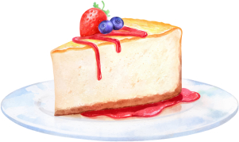

Red Fruit Cheesecake
This red fruit cheesecake recipe is incredibly delicious! The sweetness of the strawberries and the slightly tangy flavor of the blueberries come together to create a fresh and harmonious combination, resulting in a delightful dessert. Additionally, the creamy texture of the cheesecake perfectly complements the biscuit base's crunch. This recipe is perfect for anyone seeking a simple yet impressive dessert to serve to their guests.
Recipe preparation method
Ingredients:- 200g cornstarch biscuits
- 100g of butter
- 300g cream cheese
- 1 can of condensed milk
- 1/2 cup lemon juice
- 1 tablespoon colorless gelatin powder
- 1 cup chopped strawberries
- 1 cup of blueberries
- Grind the cookies and mix with the melted butter. Forge a shape and take it to the fridge.
- Beat the cream cheese, condensed milk and lemon juice. Add dissolved gelatin.
- Pour over the biscuit base and refrigerate for 2 hours.
- Top with fruit and serve chilled.